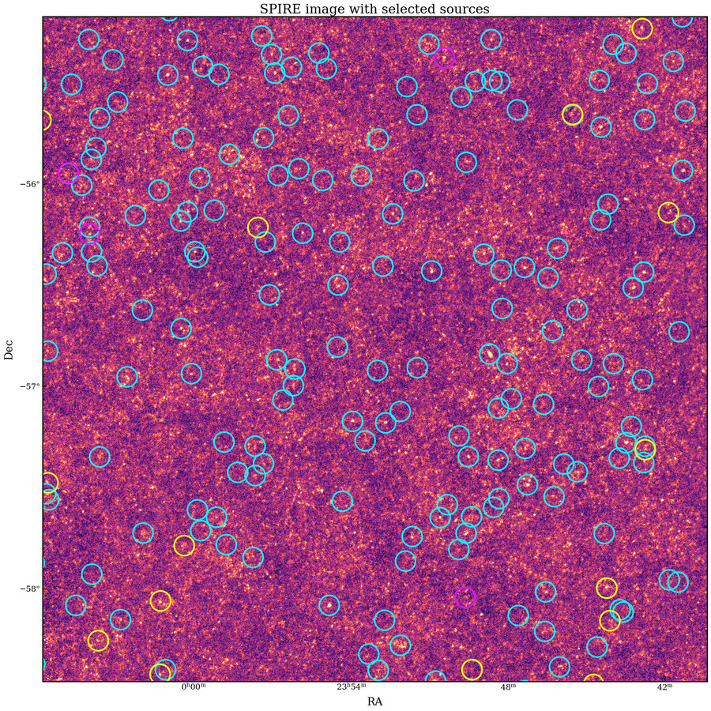
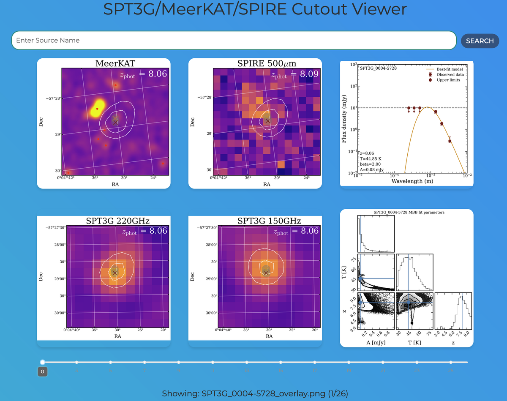
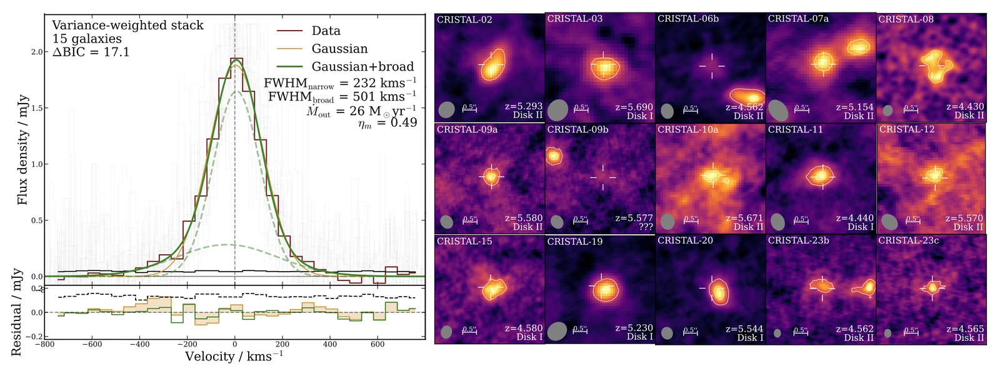
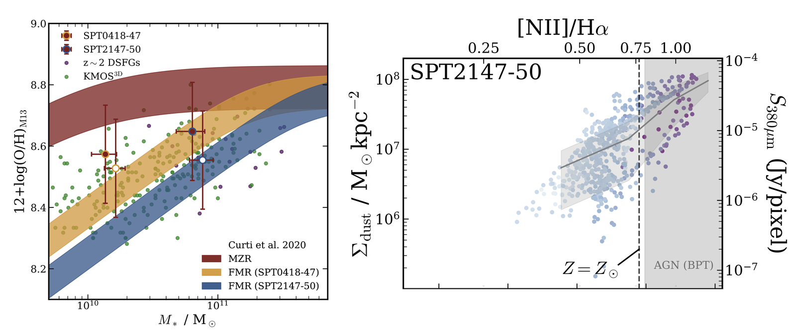
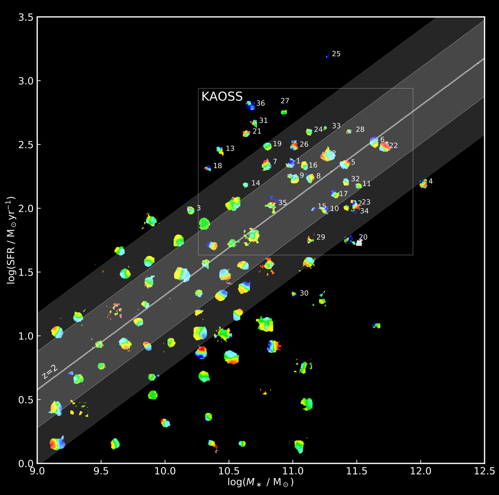
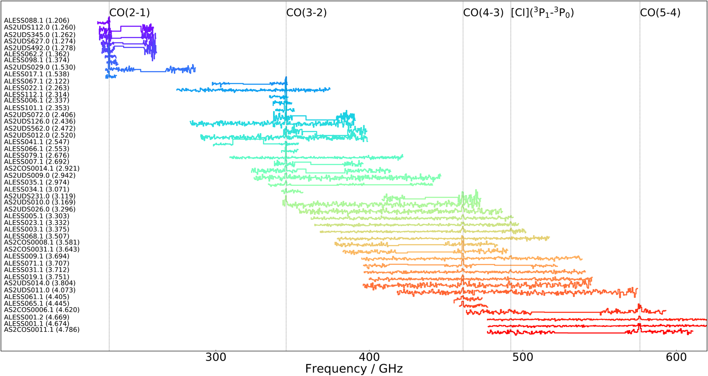

Projects
AI & engineering
Famēlia's codebase is private, so the work below is described rather than linked.
Amelia — per-member recipe adaptation
A LangGraph state graph served over FastAPI on Azure that rewrites a recipe for everyone in a household at once. Recipes are represented as a knowledge graph, so a substitution propagates through shared cooking steps rather than stopping at the ingredient list. Members are grouped by dietary fingerprint, so one recipe produces several safe variants without repeating the work for each person.
Retrieval over a clinical nutrition reference
A retrieval system built end to end over a 3,500-page clinical nutrition manual: PDF ingestion that preserves tables, chunking that follows the document's own structure, embeddings, and vector similarity search in Postgres via pgvector. The dietitian-facing chatbot answers from that source rather than from the model's own recall.
Testing and observability
As the only AI engineer on the product, I put the pipeline under test and made it observable — a hermetic pytest suite gating every deploy, end-to-end tracing across the pipeline with LangSmith, and an offline evaluation harness that replays captured production cases and compares graded scores across commits.
Astronomy & data science
From my research years. Fuller detail, including papers and data, is on the astronomy page.

Exploring High-z SMGs: Catalog Matching, SQL Queries, and Confusion Limits
Looking for very distant dusty galaxies in the SPT-3G survey.
Published: April 2025

Dash App for Multiwavelength Cutout Navigation
A Python-based tool for visualizing and reviewing astronomical cutouts across SPT3G, MeerKAT, and SPIRE.
Published: February 2025

Aggregating and Stacking of Spectral Data for Model Selection
Boosting the signal-to-noise ratio from distant galaxies to identify faint emission features.
Published: February 2025

3-D Modelling of JWST Data
A look at some early results from JWST, including spatial resolved metallicites of submillimetre galaxies.
Published: February 2025

Data-Driven Insights into Turbulent Galactic Disks
Analyzing the 2-D kinematics of star-forming galaxies and modeling their rotation curves. The second half of my PhD thesis.
Published: February 2025

Molecular Gas in Dusty Star-Forming Galaxies
Modeling the carbon monoxide emission from early-Universe galaxies. The first half of my PhD thesis.
Published: MNRAS, 2021